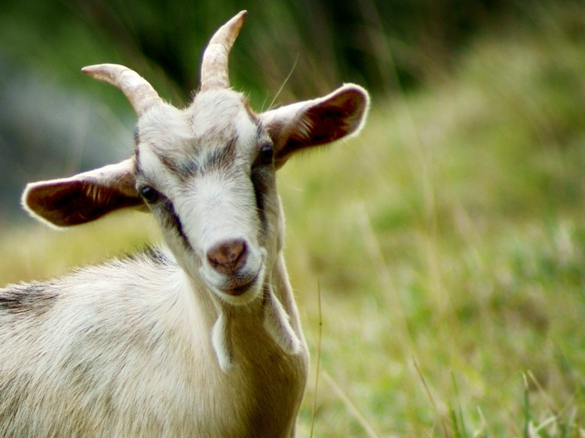
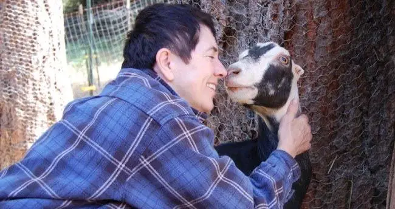

Goats R Us
By James Delgado-May 9, 2024
What Is A Goat?
There are three types of domestic goats—those used for dairy , meat and fiber—and more than 200 recognized domestic breed. Some goats are polled, or genetically hornless. Others may have scimitar- or cor kscrew-type horns, but many are dehorned at an early age to prevent injury to other goats and handlers. Certain breeds have straight noses, while others have convex or slightly dished noses. Their ears may be erect or drooping and vary in size. heir short or long hair can be curled, silky or coarse. They may also have beards and wattles on their necks. Goats come in many colors: solid black, white, red, brown, spotted, two - and three-colored or blended shades. They may also have facial stripes or black-and-white saddles. Goats’ eyes have rectangular pupils. Eye color varies, but yellow and brown are the most common. Goats will often browse at night, and it is believed that they have excellent night vision. The Zoo exhibits Nigerian dwarf goats. Nigerian dwarf goats were first registered by the International Dairy Goat Registry in 1981. They are the only true miniature goat breed of the dairy type and have features similar to those of other dairy goat breeds, only smaller. Their face is straight or slightly dished, and their ears are upright and alert. They have straight, short-to-medium length hair and come in many colors, the most common being black, brown and gold. White markings, spots and other color combinations are also co Goat and Human Interaction
The domestic variation of these creatures would not exist without human interaction. Thousands of years ago people selected and bred only the most docile, friendly, personable individuals and over many generations the domestication process occurred.People use and have used these mammals for a wide variety of purposes. They keep them as pets, breed, them, show them, use their milk, hide, and meat. Some people also use them to clear bushes and shrubbery from areas.
